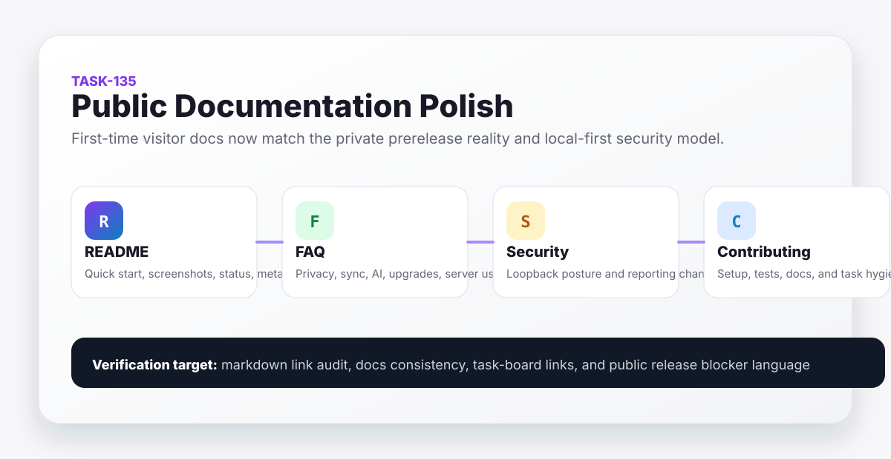

Grimoire Task Report
Public Documentation Polish

Before
The README was long, duplicated quick-start content, and presented the one-command installer as the recommended path even though the repository was still private and unauthenticated release URLs returned 404. The FAQ did not exist, contributor setup was stale, and some task-board links pointed at moved task files.
Problem
A first-time GitHub visitor needed a clear project explanation, honest install status, screenshots, test guidance, security posture, and support paths before the repository becomes public.
Changes Added
- Rebuilt
README.mdaround a first-visitor flow with banner, badges, screenshots, quick start, local-first architecture, integration summary, and recommended GitHub metadata. - Added
docs/faq.mdcovering sync, privacy, daemon crashes, no-AI use, upgrades, Windows, and server deployment. - Rewrote
SECURITY.mdwith clearer reporting guidance, PGP status, loopback-first boundaries, implemented controls, limitations, and user best practices. - Refreshed
CONTRIBUTING.mdwith current setup, testing, API docs, task-report, and task-board expectations. - Fixed stale task-board links for tasks already moved to
done.
Result
The public docs now avoid overclaiming public install readiness, point users to source/Docker paths while release visibility is blocked, and provide a more direct map to product, security, development, and release documentation.
Verification
- Confirmed with
gh repo viewthat the repository is private on 2026-06-05. - Confirmed with
curl -Ithat the tag-qualified raw installer URL returns unauthenticated404. - Ran the local markdown link audit for public docs, docs markdown files, and
tasks/README.md. - Ran a local HTML link audit for the task-report root, year, month, and TASK-135 report pages.
Files Changed
README.mddocs/faq.mdSECURITY.mdCONTRIBUTING.mdtasks/README.mdtasks/done/TASK-135-public-documentation-polish.mddocs/task-reports/2026/06/2026-06-05-task-135-public-documentation-polish/index.html
Follow-Ups
Once public artifact visibility is unblocked, the README quick start should be promoted from source-first to release-installer-first and TASK-078/TASK-079 validation evidence should be linked from the release docs.